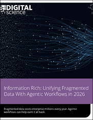

Enterprise data has never been more abundant—or more fragmented. Spread across disconnected systems, teams, and third-party tools, data fragmentation leaves organizations simultaneously data-rich and information-poor. Staff spend hours each week reconciling data, switching between platforms, and searching for information. According to research carried out by IDC, 68% of enterprise data remains entirely unanalyzed.